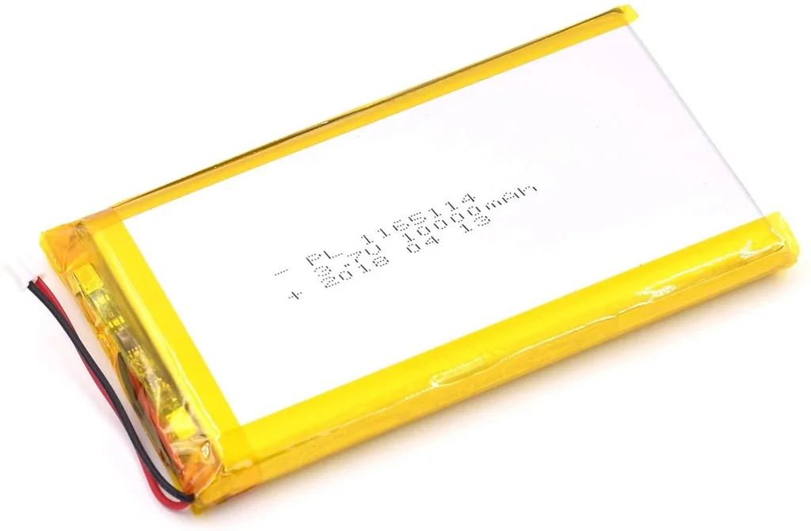
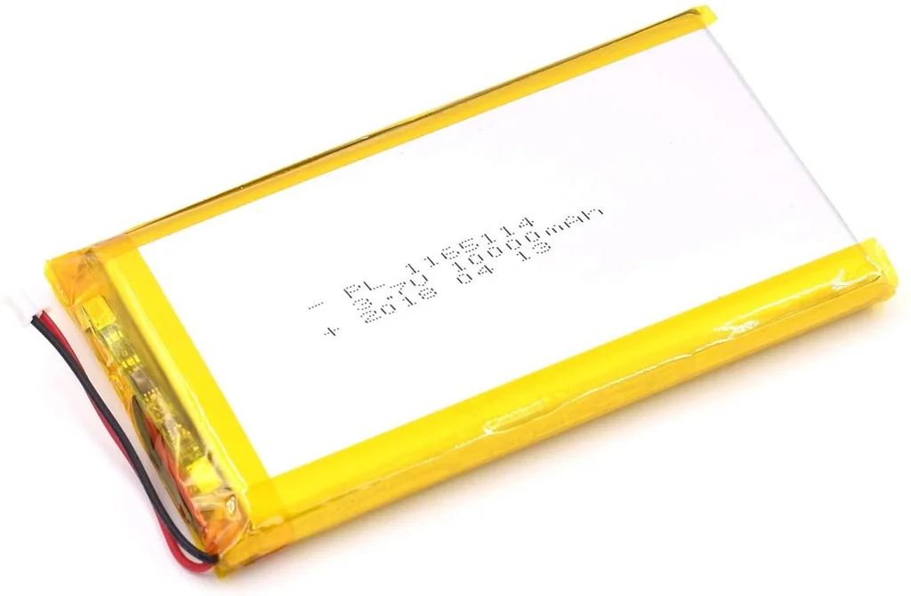

Cara Membuat Lampu Jalan Tenaga Surya Otomatis Tanpa Listrik
Mas Tukang tinggal di sebuah pedesaan yang masih asri dan hijau di pagi, siang, dan sore hari. Di malam hari, semua berubah gelap karena tidak adanya penerangan dari lampu kota, termasuk di jalan depan rumah Mas Tukang. Meskipun sudah memasang lampu jalan, Mas Tukang sering lupa untuk menyalakannya ketika pergi ke luar rumah di siang hari dan akan pulang malam hari. Akibatnya, ketika pulang dan sampai di depan rumah, suasananya gelap gulita.
Karena inilah, Mas Tukang membuat lampu jalan yang bisa menyala otomatis ketika matahari mulai terbenam, dan mati otomatis ketika matahari terbit. Kebetulan, di gudang Mas Tukang ada beberapa lembar panel surya kecil dan baterai lithium yang nganggur tidak terpakai, sehingga Mas Tukang akan membuat lampu jalan bertenaga baterai lengkap dengan panel surya untuk mengisi baterai ketika siang hari. Panel surya ini juga merangkap sebagai sensor cahaya untuk menentukan kapan lampu akan menyala dan mati secara otomatis.
Bagian 1: Komponen, skema rangkaian, dan Cara Kerja Rangkaian Lampu PJU Tenaga Surya
List komponen yang dibutuhkan:
- 1 buah transistor NPN. (contoh: BD139, D882, S8050)
- 1 buah MOSFET N-Channel. (contoh: IRF540N, IRFZ44N, IRF3205). MOSFET ini akan menghandel arus sesuai lampu yang dipakai, sehingga pilihlah MOSFET yang kemampuan handel arusnya diatas arus yang dibutuhkan lampu.
- 1 buah Step Down Converter. Mas Tukang menggunakan XL4015 5 Ampere. Output dari step down di set ke 4.2 V
- 1 buah Dioda 5 Ampere
- 1 Buah Mata LED 1 Watt, atau bisa menggunakan lampu bohlam LED 3 watt rumahan yang dihubungkan ke rangkaian Joule Thief Inverter.
- 1 buah resistor 1K Ohm
- 1 buah resistor 100K Ohm
- Panel surya. Mas Tukang menggunakan 3 buah panel surya 10 wp tipe Monocrystalline.
- Baterai lithium. Bisa lithium-ion atau lithium polymer Minimal 10.000 mAh
- 1 Batang Baja Ringan untuk tiang lampu
 

Skema rangkaiannya bisa dilihat pada gambar di bawah ini:
Cara kerja rangkaian ini sangat sederhana. Ketika malam hari, tidak ada suplai arus dari panel surya yang mengalir ke step down converter dan ke basis transistor Q2, menyebabkan Q2 dalam kondisi OFF. Ketika Q2 OFF, kaki Gate pada MOSFET Q1 akan mendapat arus dari kutub positif baterai melalui resistor 100K Ohm, sehingga Q1 akan ON dan menyebabkan lampu menyala. Ketika siang hari, panel surya menyuplai arus ke step down converter hingga ke basis transistor Q2 melalui resistor 1K Ohm sehingga Q2 dalam kondisi ON. Q2 yang dalam kondisi ON akan menghubungkan kaki Gate MOSFET Q1 langsung ke kutub negatif baterai (ground) tanpa melalui resistor, menyebabkan Q1 OFF sehingga lampu pun mati.
Bagian 2: Pemasangan Komponen pada Tiang Lampu Jalan
Mas Tukang menggunakan baja ringan sebagai tiang lampu. Panel Surya dipasang di bagian paling atas tiang, miring 20º ke arah utara.
Papan rangkaian yang Mas Tukang buat berukuran kecil sehingga bisa masuk ke dalam lekukan tiang baja ringan. Papan rangkaian langsung dibaut ke tiang baja ringan menggunakan spacer kuningan. Untuk perlindungan waktu cuaca hujan, Mas Tukang menggunakan cara simpel, yaitu ditutupi dengan kaleng bekas sereal yang diletakkan terbalik.
Bagian 3: Pengujian Lampu Jalan Tenaga Surya
Setelah semua komponen terpasang pada tiang, sekarang saatnya untuk pengujian. Terukur panel surya mampu membangkitkan arus sebesar 1.6 Ampere ketika dipapar sinar matahari, pada kondisi pengecasan maksimal (tegangan baterai di 3.4 V - penuh di 4.2 V). Lampu selalu mati otomatis pada sekitar jam 17:50 - 18:00, berdekatan dengan Adzan Maghrib. Pada waktu lampu menyala otomatis, tegangan baterai terukur di tegangan penuh, yaitu 4.2V. Sedangkan pada waktu lampu mati otomatis, tegangan baterai terukur di 3.87V. Pada sore harinya saat lampu menyala otomatis, tegangan baterai terukur kembali pada tegangan penuh, dan pada keesokan paginya terukur 3.88V. Dari seminggu pengukuran diperoleh hasil yang kurang lebih mendekati dengan hasil di atas.
Bagian 4: Kesimpulan dan Ide Pengembangan Lampu PJU Tenaga Surya
Lampu PJU ini berhasil dengan stabil menyala dan mati otomatis setelah dipasang di luar ruangan dan terpapar sinar matahari. Karena waktu pengujian sedang musim kemarau, sinar matahari bersinar sangat terik setiap harinya. Jadi dapat dipastikan panel surya mendapat cukup cahaya sepanjang hari dengan waktu penyinaran selama 8 jam dan waktu penyinaran maksimal (puncak matahari terik) selama 2.5 jam. Sampai artikel ini ditulis, belum dilakukan pengujian di musim hujan dimana sinar matahari sangat minim karena pada musim hujan sinar matahari terhalang awan dan akan mempengaruhi arus yang dibangkitkan panel surya.
Lampu PJU ini masih bisa dikembangkan dengan menambahkan sensor arus pada input dan output baterai, sehingga energi yang masuk dan keluar baterai bisa terukur. Dengan demikian, bisa ditambahkan rangkaian pengatur beban seperti PWM yang dikontrol oleh arduino dengan input dari sensor arus tersebut sehingga kecerahan lampu bisa disesuaikan dengan berapa banyak energi yang didapat dari panel surya, untuk menjaga lampu selalu menyala hingga pagi hari tanpa kehabisan baterai, meskipun dengan kecerahan yang berbeda-beda tergantung energi yang tersimpan di dalam baterai.